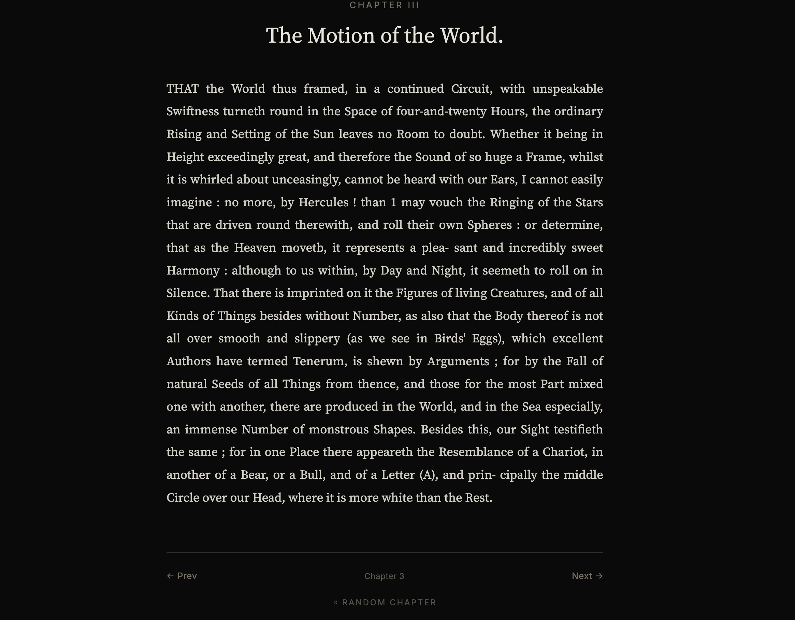
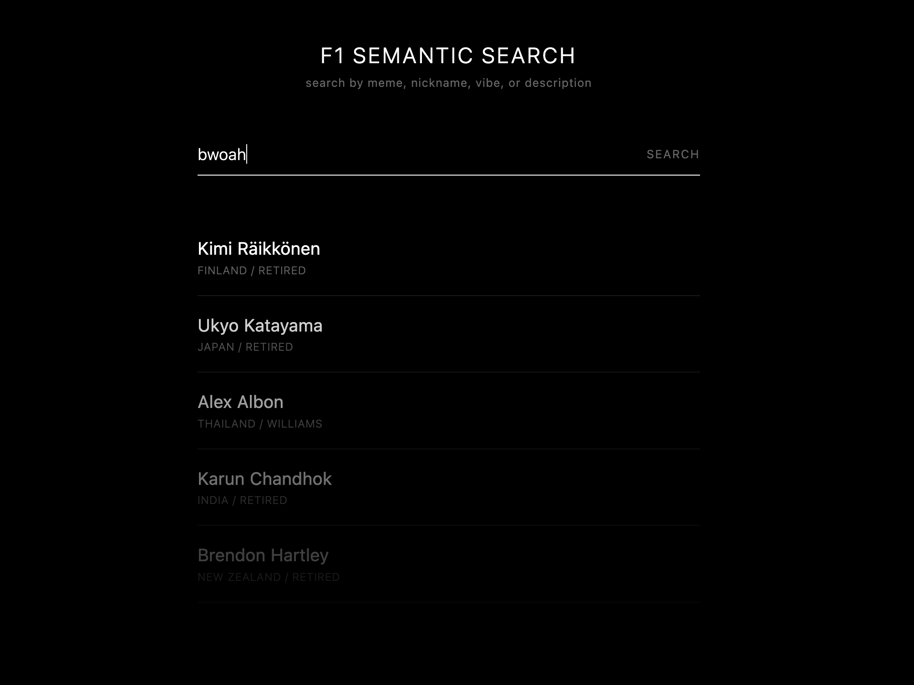
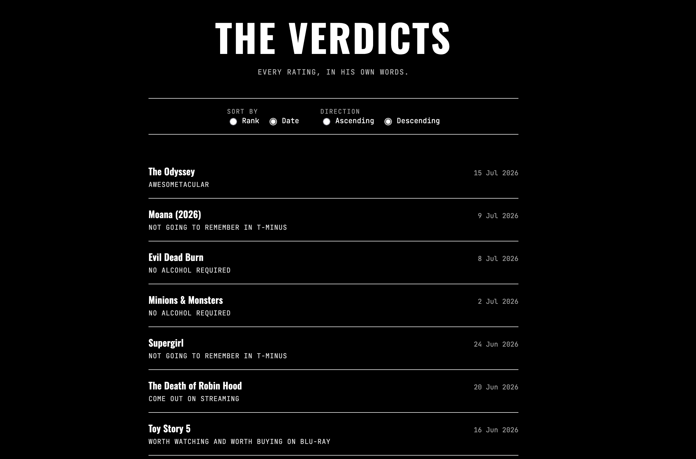

A website that neatly arranges the 37 volume Historia Naturalis by Pliny into bite-sized chunks for easy reading and review tagging.
I build small, fast tools and the occasional overengineered side project. Mostly backend and infra, sometimes frontend when the API isn't enough. Currently looking for my next role.

A website that neatly arranges the 37 volume Historia Naturalis by Pliny into bite-sized chunks for easy reading and review tagging.

A search optimizer for a dataset(F1 drivers) that goes beyond basic keyword searching using the help of fine tuned models.

Classifying videos by generating the transcript using AI and categorising them based on the keywords used in the video.